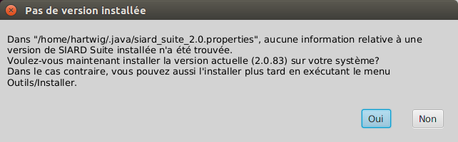
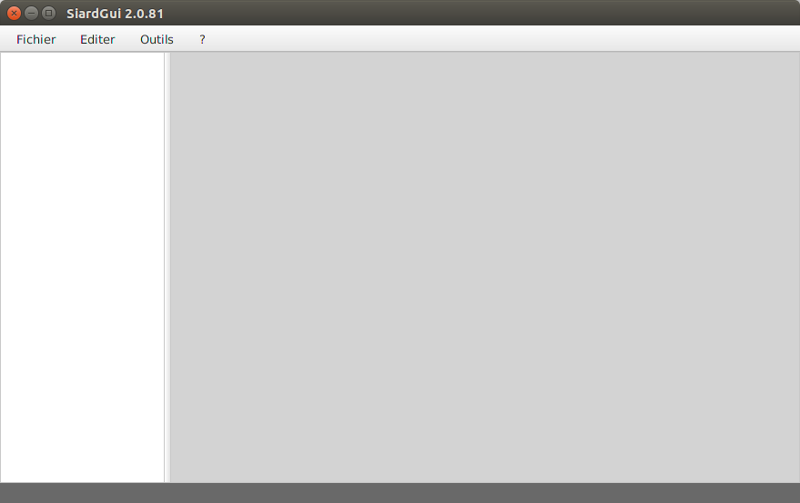
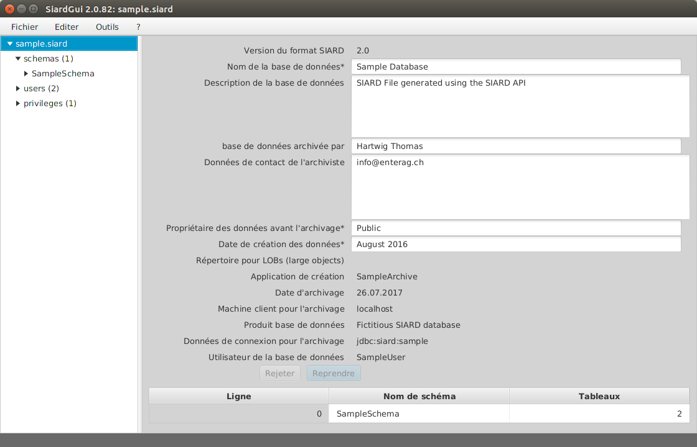
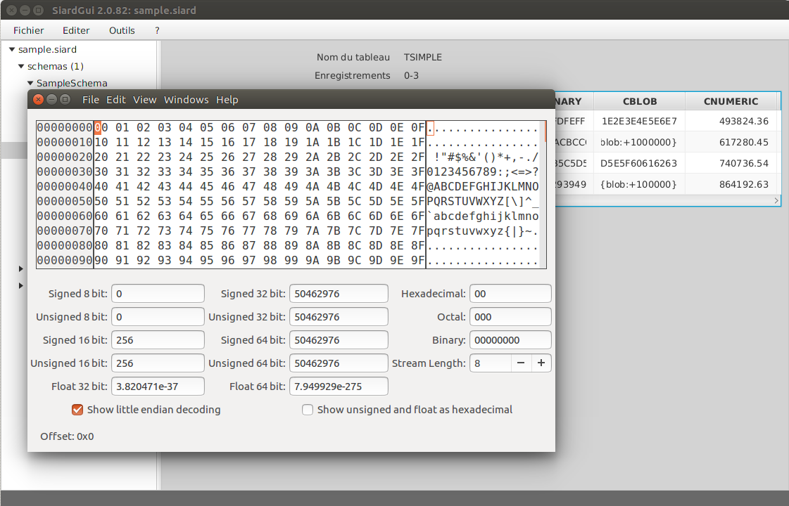
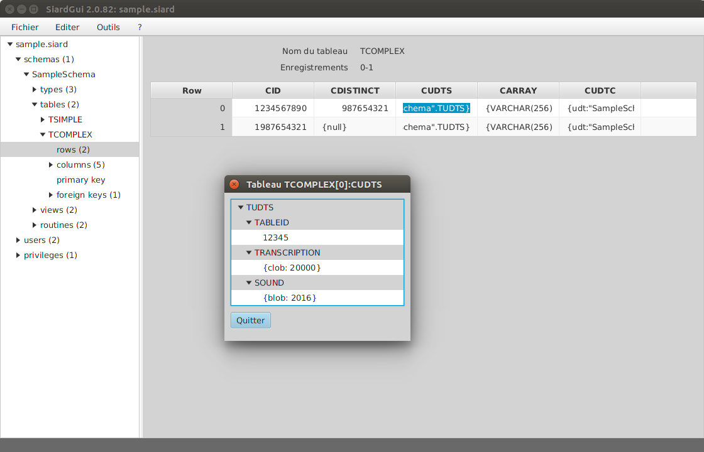
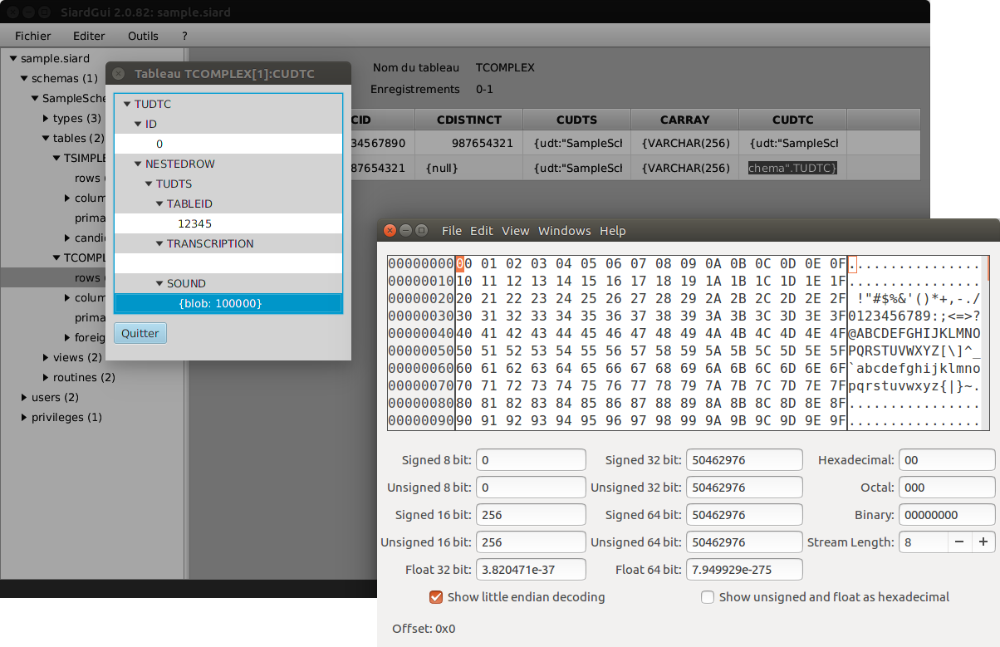

SIARD Suite 2.1 - Exécution de SiardGui
L'application SiardGui intègre une interface graphique interactive (GUI - Graphical User Interface). À l'aide de SiardGui, il est possible de:
- télécharger une base de données et de l'enregistrer dans une archive SIARD,
- d'afficher les métadonnées dans une archive SIARD, de les rechercher, de les trier, de les compléter et de les modifier, tant que les données primaires demeurent inchangées,
- d'afficher, de rechercher et de trier les données primaires dans une archive SIARD,
- de charger une archive SIARD dans une instance de base de données en vue de recherches,
- de télécharger les métadonnées d'une base de données pour une archive SIARD (sans données primaires) pour obtenir un premier aperçu du processus d'archivage,
- d'importer un échantillon de métadonnées d'une archive SIARD à titre d'exemple avec des descriptions existantes.
SiardGui est l'application centrale avec laquelle des données sont traitées en format SIARD. Les données primaires ne peuvent pas être modifiées. SiardGui n'est pas adapté pour des recherches complexes. Pour ces dernières, il est recommandé de charger l'archive SIARD dans une instance de base de données dans laquelle toutes les possibilités de requêtes SQL sont disponibles.
La conversion des champs de données de bases de données du type TIME ou TIMESTAMP dépend du fuseau horaire local. Si l'heure 15:30 est enregistrée dans une base de données à Zurich, elle sera alors enregistrée à l'heure UTC 14:30 (en hiver!) dans les métadonnées de l'archive SIARD. Si toutes les heures dans une base de données doivent être interprétées sans changement à l'heure UTC, SiardGui doit est lancé avec l'option
-Duser.timezone=GMT.
SiardGui peut être lancé avec le nom d'une archive SIARD comme unique argument qui sera alors immédiatement ouverte après le démarrage. Cela rend possible la configuration de SiardGui comme application standard pour l'ouverture de fichiers comportant l'extension siard.
Premier démarrage
SIARD Suite est livré dans un fichier ZIP et doit tout d'abord être décompressé. Le fichier SiardGui.jar se trouve dans le répertoire lib de la livraison. Si JAVA est correctement installé, le programme peut être lancé sous Windows avec un double-clic sur le fichier JAR. Comme alternative, les scripts indépendants d'une plateforme siardgui.cmd (Windows) ou siardgui.sh (LINUX) peuvent être exécutés.
Si cela ne fonctionne pas ou qu'un autre système d'exploitation est utilisé, SiardGui peut aussi être lancé depuis la ligne de commande lib de SIARD Suite de la manière suivante:
javaw -jar lib/siardgui.jar (Windows) java -jar lib/siardgui.jar (tous les systèmes d'exploitation)
Pour que cela fonctionne, le répertoire bin de JAVA Distribution doit avoir été inséré à la variable d'environnement PATH. Toutefois, ceci a normalement déjà été fait lors de l'installation de JAVA. Autrement, il faut indiquer le nom du chemin d'accès complet au programme JAVA: (par ex.
"C:\Program Files\Java\jre1.8.0_144\bin\javaw.exe" -jar lib/siardgui.jar
y-compris les guillemets).
Lors du premier lancement de SiardGui, un message comme ci-dessous apparait:

Comme à cet instant, SiardGui ne connait pas la langue que l'utilisateur préfère, la langue du message affiché dépend de celle configurée dans le système d'exploitation et de celle qui a été sélectinnée lors de l'installation de JAVA.
Si ce message est quittancé avec Oui, on obtient la possibilité de choisir un nouveau répertoire vide, où une copie de la livraison SIARD doit être installée. Après l'installation réussie, SiardGui peut alors être lancé depuis le répertoire sélectionné ou avec un double-clic sur l'icone du bureau venant d'être installé.
Indifféremment au fait que SiardGui ait été lancé depuis un stick USB ou un CD-ROM ou qu'il soit installé sur le PC de l'utilisateur, la fenêtre principale ci-après est affichée.
Fenêtre principale
La fenêtre principale se compose d'un Menu (en haut), d'une arborescence de navigation (à gauche), du contenu (à droite) et d'une ligne d'état (en bas).
La séparation entre l'arborescence de navigation et le contenu peut être déplacée librement. La dimension de toute la fenêtre peut également être modifiée librement (toutefois pas plus petite que le minimum défini). Si un fichier SIARD est chargé dans SiardGui, la fenêtre principale apparait de la manière suivante:
L'arborescence de gauche sert à la navigation dans les métadonnées. Les métadonnées modifiables de l'objet de base de données sélectionné dans l'arborescence de navigation à gauche peuvent être saisies ou modifiées dans la partie supérieure droite du contenu.
Appliquer et Rejeter
En activant le bouton Appliquer, les modifications dans les métadonnées de l'archive SIARD ouverte sont copiées. En cliquant sur Rejeter, toutes les modifications effectuées depuis le dernier Appliquer ne seront pas reprises.
Tableau des sous-objets
Un tableau des sous-objets les plus importants est affiché dans le contenu sous les métadonnées modifiables. Si un titre de colonne est cliqué, le tableau est trié selon cette colonne. Comme les tableaux dans les schémas et les colonnes des tableaux ne possèdent pas d'ordre naturel dans les métadonnées, ils sont affichés dans SiardGui normalement en ordre alphabétique. Cette possibilité de tri est utile lorsque l'on veut essayer de s'y retrouver dans de grands schémas de bases de données.
Tableau avec données primaires
Sous rows, les données primaires de chaque tableau sont affichées. Comme les tableaux peuvent devenir très grands, il est impossible et aussi pas très utile de charger tous les enregistrements et de les afficher. À la place, si rows est sélectionné, un aperçu de 50 enregistrements au maximum répartis sur tout le tableau est affiché. On peut ensuite sélectionner quelle branche doit être affichée en détail, jusqu'à ce que le degré de détail est atteint, où chaque enregistrement devient visible.
Si un titre de colonne d'un affichage de données primaires est cliqué, tout le tableau est trié (dans un fichier XML temporaire qui sera effacé en quittant le programme). Le tri peut durer un certain temps. Il est toutefois très utile pour retrouver des enregistrements individuels au moyen d'une valeur de colonne.
La largeur de l'affichage des données primaires peut être modifiée en tirant la ligne de séparation entre les titres des colonnes.
L'affichage de la valeur d'une ligne dans le tableau est utile pour des valeurs courtes. C'est pourquoi on peut afficher une version plus détaillée de la valeur en effectuant un double-clic sur la ligne.

Une simple valeur de donnée est ainsi affichée complètement et peut être copiée dans le presse-papier.
De longs textes (par ex. VARCHAR, CLOB ou valeurs XML) sont affichés dans une application texte externe qui peut être configurée dans le menu Outils / Options. Dans Windows, Bloc-notes est la préférence standard.

De longues valeurs binaires (par ex. VARBINARY ou valeurs BLOB) sont affichées dans l'éditeur binaire externe qui peut être configuré dans le menu Outils / Options. Dans Windows, le programme freeware HxD est configuré comme préférence et fait partie de la livraison SIARD.
Si on sait qu'une colonne BLOB contient des valeurs d'un type spécial, comme des données PDF ou d'images, il est possible, à la place de l'affichage hexadecimal, de configurer un éditeur binaire qui affiche correctement ce type de données.
Les types de données définis par l'utilisateur (UDTs - user-defined data types) sont affichés hiérarchiquement avec les noms d'attributs en gris et les valeurs en blanc.
Chacune de ces valeurs peut d'autre part être affichée en détail avec un double-clic.
